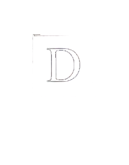
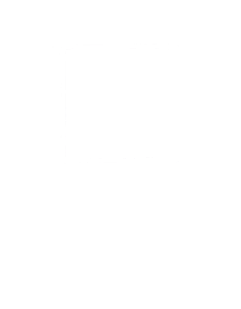
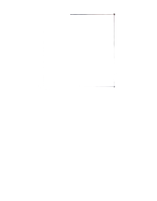
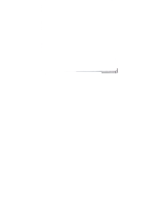
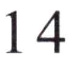
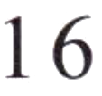

第二部分Part IIЧасть II
第14—16题： 匹配句子。 Questions 14-16: Match the sentences.Questions 14-16: Match the sentences.Задания 14–16: Сопоставьте предложения.
Bú kèqi.A 不客气。
Yí gè miànbāo.B 一个面包。
Bù zhīdào.C 不知道。
Hǎo de. xièxie!D 好的， 谢谢！
Nǐ hē shuǐ ma?例如： 你喝水吗？Would you like some water?
Example: Would you like some water?Пример: Хочешь воды?那里卖不卖手机？
我会写了， 谢谢老师。
你要什么？
第三部分Part IIIЧасть III
第17—18题： 选词填空。 Questions 17-18: Choose the correct word to fill in each blank.Questions 17-18: Choose the correct word to fill in each blank.Задания 17–18: Выберите правильное слово, чтобы заполнить пропуск.
gěiA 给
yíxiàB 一下
míngziC 名字
Nǐ jiào shénme例如： 你叫什么( C )?What is your name?
Example: What is your name?Пример: Как тебя зовут?17.
100你看( )，你要什么？